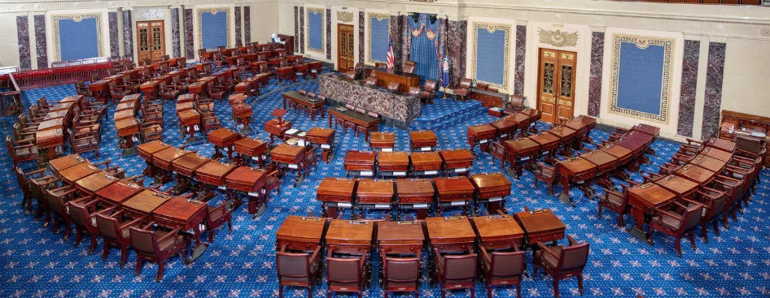
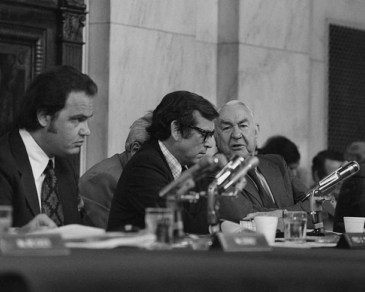

House
435 voting seats
Each voting member represents one district and serves a two-year term.
Explore the HouseThe legislative branch
Your district sends a representative. Your state sends two senators. Here’s how they turn an idea into federal law.
01 / The Capitol
The Senate meets in the north wing. The House meets in the south. Separate the wings to see where each fits around the Rotunda.
West front Faces the National Mall
Both chambers meet on the second floor, on opposite sides of the Rotunda.
02 / Representation
In the House, more populous states get more seats. In the Senate, every state gets two. Federal laws generally need the support of both chambers.
435 voting seats
Each voting member represents one district and serves a two-year term.
Explore the House
100 seats
Each senator represents an entire state and serves a six-year term.
Explore the Senate03 / Lawmaking
The House votes to repair library roofs. The Senate adds accessible entrances. The bill can move on only after both chambers approve the exact same text.
Follow all six stepsLibrary Repair Grants Act
Library Repair Grants Act
The Senate has added a second item.
04 / Congressional powers
Congress also decides how federal money is spent and investigates how agencies use it. The Senate considers many of the president’s nominees.
